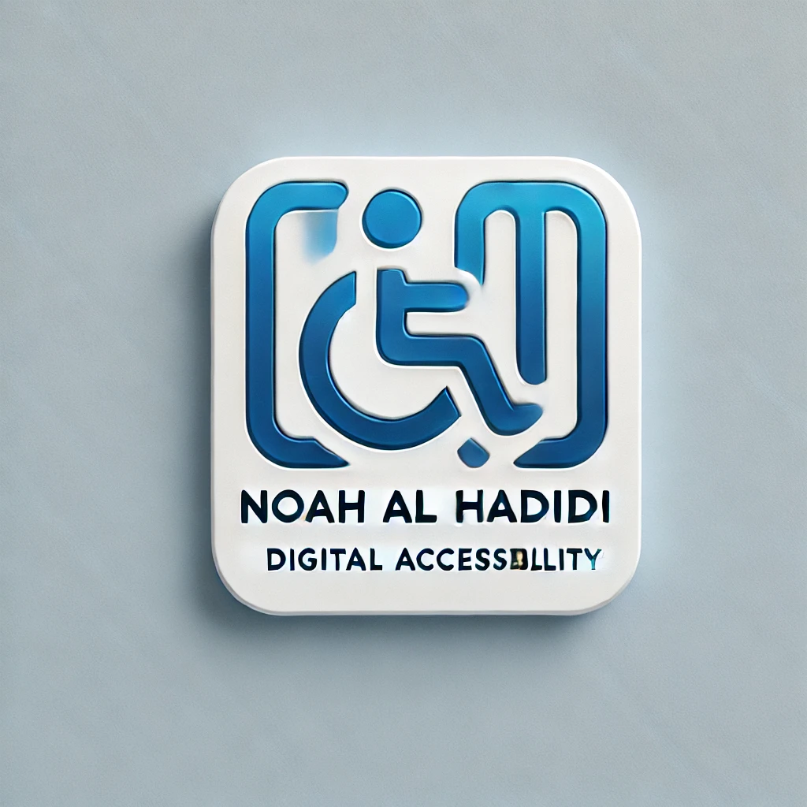

<header>
    <a href="#main-content" class="skip-link">تخطي إلى المحتوى الرئيسي</a>
    <button id="dark-mode-toggle" onclick="toggleDarkMode()">تبديل بين الوضع الليلي والنهاري</button>
    

    <!-- Language Switcher in Its Own ARIA Region -->
    <nav aria-label="اختيار اللغة">
        <ul>
            <li><a href="index.html" lang="en">English</a></li>
            <li><a href="index-ar.html" lang="ar">العربية</a></li>
        </ul>
    </nav>

    <!-- Main Navigation -->
    <nav aria-label="التنقل الرئيسي">
        <ul>
            <li><a href="about-ar.html">من أنا</a></li>
            <li><a href="certificates-ar.html">الشهادات</a></li>
            <li><a href="audits-ar.html">تدقيقات إمكانية الوصول</a></li>
            <li><a href="media-ar.html">الظهور الإعلامي والتقديرات</a></li>
            <li><a href="contact-ar.html">تواصل معي</a></li>
            <li><a href="blog-ar.html">المدونة</a></li>
            <li><a href="https://www.linkedin.com/in/noahalhadidi" target="_blank">لينكد إن</a></li>
        </ul>
    </nav>
</header>
